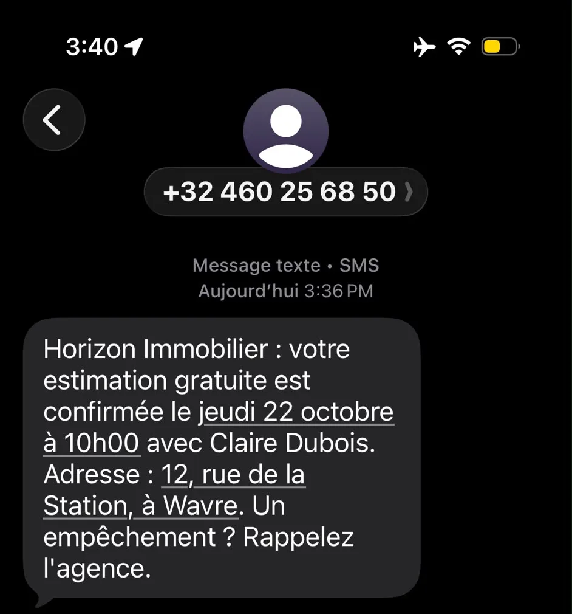
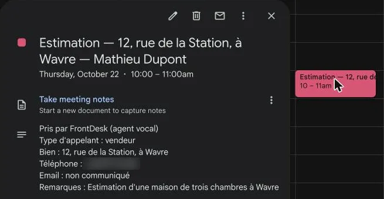
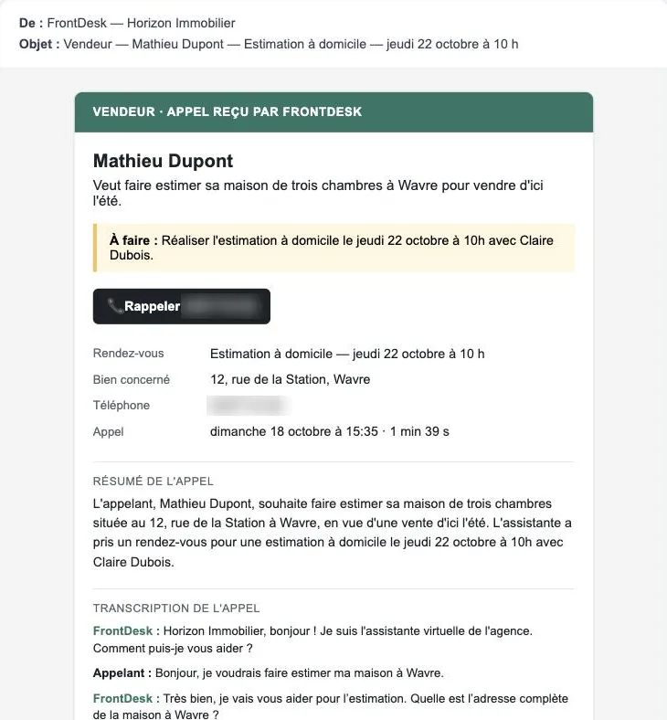

Un vendeur appelle un dimanche à 15h35. Voici ce qui se passe.
Horizon Immobilier (agence fictive de démo, Wavre) ne décroche pas le week-end. FrontDesk a pris l'appel, qualifié la demande et fixé le rendez-vous, sans qu'aucune personne de l'agence n'intervienne.
Agence fictive utilisée pour la démonstration, appel réel enregistré le 18 octobre 2026.
Écoutez l'appel, minute par minute
Demande d'estimation reçue pour Horizon Immobilier, Wavre. 1 min 39 au total.
Horizon Immobilier, bonjour ! Je suis l'assistante virtuelle de l'agence. Comment puis-je vous aider ?
Bonjour, je voudrais faire estimer ma maison à Wavre.
Très bien, je vais vous aider pour l'estimation. Quelle est l'adresse complète de la maison à Wavre ?
12, rue de la Station, à Wavre.
Merci, j'ai noté douze rue de la Station à Wavre. Quel type de bien est-ce, une maison ou un appartement, et combien de chambres a-t-il ?
Une maison, trois chambres.
Merci. Quel délai de vente envisagez-vous ?
Euh, d'ici l'été.
Très bien. Êtes-vous déjà en contact avec une autre agence pour ce bien ?
Non.
Parfait, je peux vous proposer une estimation à domicile avec Claire Dubois. Quel jour ou quel moment vous arrangerait pour le rendez-vous ?
Euh, jeudi matin.
J'ai trois possibilités : jeudi vingt-deux octobre de neuf heures à dix heures, de dix heures à onze heures, ou de onze heures à douze heures. Lequel vous convient ?
À dix heures.
Très bien. Je peux finaliser le rendez-vous, mais j'ai besoin de votre nom complet et de votre numéro de téléphone pour confirmer.
Oui, mon nom complet, c'est Mathieu Dupont et mon numéro de téléphone, c'est celui avec lequel j'appelle.
C'est noté : estimation le jeudi vingt-deux octobre à dix heures, chez vous, avec Claire Dubois. Vous allez recevoir un SMS de confirmation. Puis-je vous aider avec autre chose ?
Non, ce sera tout.
Bonne journée et à bientôt.
Ce que l'agence reçoit
Rien à faire côté agence : les trois actions se déclenchent automatiquement à la fin de l'appel.

Le vendeur reçoit sa confirmation par SMS.

Le rendez-vous est déjà dans votre agenda.

Vous recevez le récap complet par mail.
Donnez les mêmes réflexes à votre agence
Ce même scénario se répète chaque semaine dans une agence : appel manqué, prospect perdu. FrontDesk le prend en charge, soir et week-end compris.